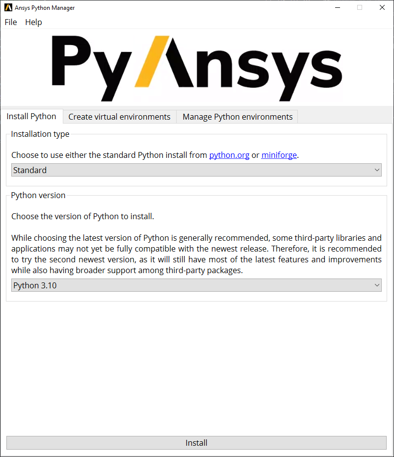
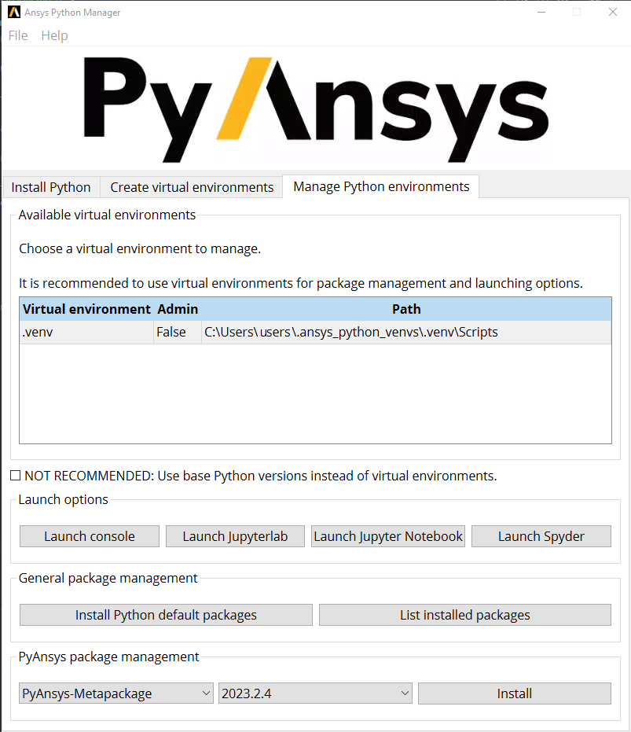
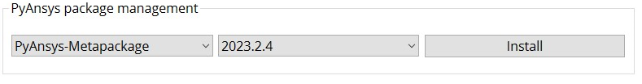

User guide#
Introduction#
Python has emerged as a leading language for a diverse range of applications, encompassing data science, machine learning, web development, and workflow automation. PyAnsys is a set of Python package that aligns with this trend, offering a Pythonic interface to Ansys Products. It serves as a powerful tool for automating engineering workflows, conducting parametric studies, and post-processing simulation results, among other applications. However, configuring Python environments and handling dependencies can occasionally prove to be daunting. This is where Ansys Python Manager comes to play.
What is the Ansys Python Manager?#
The Ansys Python Manager is a collaborative open source Python QT app developed by various groups within Ansys. This efficient tool has garnered significant popularity and received positive feedback for its capability to streamline Python usage, simplify virtual environment management, and facilitate PyAnsys packages administration.
In this user guide, various features offered by the Ansys Python Manager are explored, such as Python installation, creation and management of virtual environments, and the available ways to initiate Integrated Development Environments (IDEs) & Development environments. This user guide further explore the package management capabilities of the Ansys Python Manager, including the installation of PyAnsys packages and the management of dependencies. Finally, this user guide offers information on accessing PyAnsys documentation through the Ansys Python Manager, as well as the options available for updating the app.
Installation#
To install the Ansys Python Manager, you can visit its
repository
and download the installer from the latest release
(Ansys-Python-Manager-Setup-v*.exe) from the Assets section. After
downloading the installer, simply run it and follow the installation
instructions to install the Ansys Python Manager on your machine. Once
the installation is complete, you can easily launch the Ansys Python
Manager from the Start Menu.
Install python tab#
The Ansys Python Manager offers a user-friendly interface for Python installation. You can easily select the desired Python version from the provided drop-down menu. The manager provides two options: standard Python and conda-forge python. The standard Python option is the official Python distribution, while the conda-forge Python option uses the community-driven distribution used with products like Anaconda.
After selecting the desired Python version and clicking the Install button in the Ansys Python Manager, then the app proceeds to download and install the chosen Python distribution. The installation process may take a few minutes to complete. Once the installation is finished, the Ansys Python Manager subsequently displays the installed Python version and its corresponding installation path in the next tab labeled “Create Virtual Environments.”
{kind=link}
Create virtual environments tab#
The “Create Virtual Environments” tab in the Ansys Python Manager provides the interface for creating and managing virtual environments. You can easily create a virtual environment by selecting the desired Python version and providing a name for the environment. Simply click the Create button to initiate the virtual environment creation process. The Ansys Python Manager creates the virtual environment and display its corresponding path in the subsequent tab labeled “Manage Virtual Environments.”
{kind=link}
Manage virtual environments tab#
The “Manage Virtual Environments” tab in the Ansys Python Manager allows you to effectively manage the virtual environments you have created. You have options available, such as deleting a virtual environment, Launch Options, General Package Management, and PyAnsys Package Management for the selected virtual environment. You can also delete a virtual environment by selecting it from the available list under “Available virtual environments” and clicking on the “Delete virtual environment” option available with context menu.
{kind=link}
Launch options provides the option to launch the selected virtual
environment with the available IDEs and development environments. For
example, you can launch the Spyder IDE by selecting the virtual
environment from the available list and clicking on the
Launch Spyder option. Likewise, you can launch the Jupyter Notebook,
Jupyter Lab and console.

Tip: By using Launch console option, you can launch the
virtual environment in the command prompt and subsequently navigate
to the development folder and launch the VS Code IDEs using command
line option “code .” And set the interpreter to the virtual
environment.
General package management#
In the “General Package Management” section, users are presented with the choice
to “install default packages.” By opting for this selection, the chosen
Python installation or virtual environment receives the most up-to-date
compatible versions of essential packages such as such as numpy, scipy,
pandas, matplotlib, and scikit-learn.
After the installation process concludes, users can view the list of
installed packages by clicking the List Installed Packages button.
The Ansys Python Manager subsequently display the installed packages in the
console, providing an overview of the installed dependencies.

PyAnsys package management#
In the “PyAnsys Package Management” section, there is flexibility to choose the PyAnsys metapackage and its version to install it within the selected Python installation or virtual environment. By selecting the desired PyAnsys metapackage version from the available drop-down menu, users can proceed to install it by clicking the Install button. The Ansys Python Manager, then initiate the download and installation process of the PyAnsys metapackage. Individual PyAnsys packages are also available for download. It is important to note that the installation process may take a few minutes to complete, depending on the size of the package and the internet bandwidth.
To ensure that you have the latest version of the Ansys Python Manager, you can easily update it by clicking on the “Check for Updates” option located in the File menu. The Ansys Python Manager, then verify if a newer version is available and update accordingly if necessary.
In addition, the Ansys Python Manager offers convenient access to the
PyAnsys documentation through the Help menu. By selecting your
desired PyAnsys project from the provided drop-down menu and clicking on
Open Website, which redirected to the documentation website
specifically to the selected project. This enables you to access
comprehensive documentation and resources for your chosen PyAnsys
project.
{kind=link}
Conclusion#
In this comprehensive user guide, the wide range of features offered by the impressive Ansys Python Manager has been explored. This robust tool provides a user-friendly interface for effortless Python installation, efficient creation and management of virtual environments, and seamless installation of PyAnsys packages. Moreover, it offers multiple options for launching your virtual environment in various IDEs and development environments. By harnessing the power of the “Ansys Python Manager,” you can streamline your Python development workflow. So, what are you waiting for? Download the Ansys Python Manager and supercharge your PyAnsys development today.